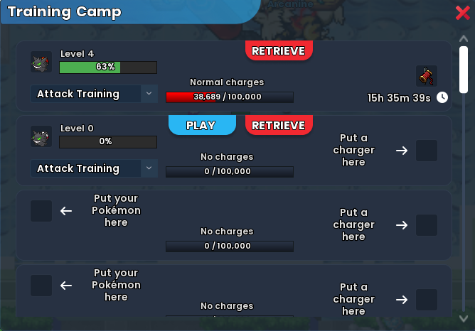
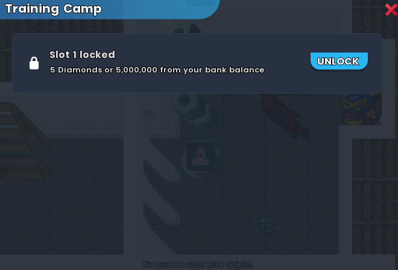
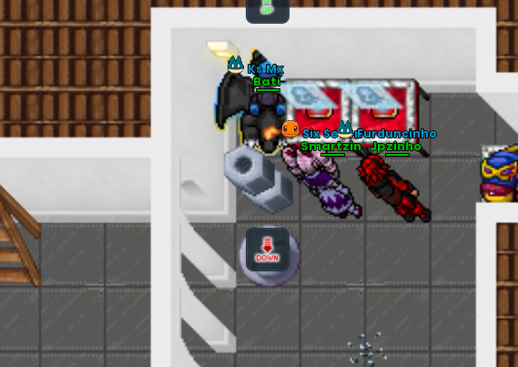

Sistema de Entrenamiento
Entrenamiento de atributos mediante Punching Bag dentro de una House y el próximo sistema Training Camp, con cargadores normales y Premium.
Training Camp Próximamente

Vista previa del Training Camp durante su fase de desarrollo.
Desbloqueo de slots
Para utilizar un slot del Training Camp, primero debes desbloquearlo. Cada slot cuesta 5 Diamonds (5 DD) o 5,000,000 (5kk) del saldo de tu banco.

Ejemplo del panel de desbloqueo de un slot del Training Camp.
Ubicación
Las computadoras del Training Camp se encuentran en la planta de abajo del Trade Center (TC), del lado derecho.

Referencia visual de la ubicación: planta de abajo del TC, del lado derecho.
Cómo funcionará
- Usa una de las computadoras ubicadas en la planta de abajo del Trade Center, del lado derecho, para abrir el Training Camp.
- Desbloquea el slot que quieras utilizar pagando 5 DD o 5kk.
- Dentro del mismo panel, coloca el Pokémon de un lado y el charger/cargas del otro lado. Utiliza el mismo tipo de charger que la Punching Bag.
- Selecciona la skill: Attack, Defense, HP, Precision, Evasion, Critical Damage, Critical Chance o Critical Resistance.
- Presiona PLAY. El Pokémon continuará entrenando automáticamente, incluso mientras estés offline.
- Presiona RETRIEVE para recuperar al Pokémon. El progreso se aplica en ese momento y las cargas restantes permanecen guardadas en el slot para un entrenamiento posterior.
Datos anunciados
| Característica | Training Camp |
|---|---|
| Slots | 20 por personaje |
| Desbloqueo por slot | 5 Diamonds (5 DD) o 5,000,000 (5kk) desde el banco |
| Ubicación | Planta de abajo del Trade Center, del lado derecho |
| Charger normal | 20,000 cargas por unidad |
| Capacidad | Hasta 100,000 cargas por slot |
| Charger Premium | +20% EXP de skill |
| Ganancia de skill | La misma que entrenando en una House |
| Entrenamiento offline | Sí |
| Pokémon durante el entrenamiento | Queda guardado en el slot, fuera de la mochila, hasta usar RETRIEVE |
| Bloqueo al subir nivel | La skill puede quedar bloqueada para detener/controlar el entrenamiento, como en la Punching Bag |
Atributos
| Entrenamiento | Ganancia por nivel |
|---|---|
| Attack | +0.1% daño |
| Defense | +0.05% defensa |
| HP | +0.1% vida |
| Precision | +0.2 punto porcentual |
| Evasion | +0.2 punto porcentual |
| Critical Damage | +0.1% daño crítico |
| Critical Chance | +0.1 punto porcentual |
| Critical Resistance | +0.1 punto porcentual |
Punching Bag
- Coloca el Punching Bag dentro de una House.
- Añade cargas compatibles.
- Selecciona el atributo.
- Activa el Pokémon.
- Inicia y vigila el progreso.
El entrenamiento con Punching Bag en House consume 1 carga cada 1.5 segundos. Esta velocidad se mantendrá también después del 14/09.
Cargas
| Cargador | Cargas | Efecto |
|---|---|---|
| Normal | 20,000 | Progreso estándar |
| Premium | 20,000 | +20% EXP de entrenamiento |
Capacidad máxima: 100,000 cargas. Una recarga completa solo puede agregarse con 80,000 o menos. No se mezclan tipos mientras queden cargas del tipo anterior.
Consultar progreso
Haz clic derecho en la Poké Ball → Customize Pokéball → pestaña Training. Ahí aparecen nivel y porcentaje de cada atributo.
Bloqueo de nivel
El candado junto al atributo permite detener automáticamente el entrenamiento en cuanto ese atributo sube de nivel, útil para controlar el consumo de cargas.
Prioridades sugeridas
- Daño: Attack, Precision y Critical.
- Resistencia: HP, Defense y Evasion.
- Prioriza Pokémon que realmente formen parte del núcleo de tu rotación.